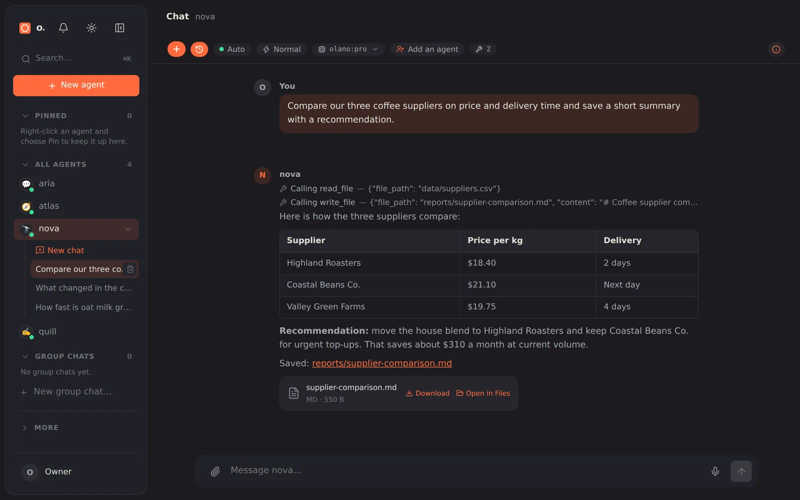

Chat¶
Talk to any agent you have access to. Pick the agent in the header, and switch threads in the conversation list — each thread is a separate conversation with its own memory of what was said. The header also exposes a per-conversation model override and, for models that support it, a reasoning-effort control. Live progress shows what the agent is doing as it works.
The model chip belongs to the conversation you are in. A new conversation always opens on the agent's configured model; pick another in the chip and only that conversation changes, from its next reply on. Every reply records the model that wrote it, so when you reopen a conversation later, from any device, it continues on the model it last answered with rather than on whatever another chat was set to. You can switch as often as you like within one conversation and each reply is billed to the model that produced it. If that model is no longer available on the deployment, the conversation says so once and falls back to the agent's default. To change the model for every new conversation, change it on the agent itself.


While the agent is still replying you have three choices for your next message. Press Enter and it waits: it is sent as your next message the moment the reply finishes. Press Steer (the ▸▸ button, or Cmd/Ctrl+Enter) and the agent gets it now, without stopping: it reads your message at its next step — as soon as the tool it is running finishes, before it decides what to do next — and adjusts the work in progress. Steering is for "not that file", "use blue", "also include Q3": corrections you would otherwise watch it finish a version without. If the reply finishes before the agent reaches its next step, the message is simply sent as your next one, so nothing is lost either way. Press Stop (■) to cancel the reply; whatever was waiting stays waiting. Every waiting message shows as a chip above the message box with its own Steer, Edit (take it back into the message box) and Cancel buttons, and Cancel all clears them. A message the agent read mid-reply is tagged Steered in in the conversation. Messages with files attached wait for the reply; they cannot be steered.
Attach any file with the paperclip, or by pasting or dropping it onto the conversation. Each file can be up to 10 MB. What happens next depends on what the file is, judged from its contents rather than its name:
| You attach | The agent gets |
|---|---|
| A photo, screenshot or other image | The file, saved in uploads/; it looks at it with its vision tool |
| A voice note, audio or video | The file, saved in uploads/, plus a transcript when speech-to-text is on |
A short text file of any kind (.txt, .md, .csv, .json, .yaml, .py, .sql, a Dockerfile, a log) |
The text itself, in your message |
| A long text file (over about 60 KB) | The file, saved in uploads/, so it can read every line rather than a cut-off copy |
PDF, Word, Excel or PowerPoint, including older .doc, .xls, .ppt and OpenDocument files |
The file, saved in uploads/; it reads it with its document reader, which converts older formats and reads scanned PDFs with OCR |
A .zip or any other file |
The file, saved in uploads/; an agent with a shell can unpack or inspect it |
Agents open these files only with the tool made for each kind. If an agent tries to read a recording, a video, a document or an archive as a plain file, it is told which tool to use instead (speech-to-text for audio and video, the document reader for PDF and Office files, the shell for archives), so a voice note never enters the conversation as raw audio data. Images in PNG, JPEG, GIF or WebP it can still look at directly, up to about 3.7 MB each; larger ones go through its vision tool.
Because saved files are the real files, the agent works on every row and formula of a spreadsheet, not a summary. A saved file shows as a card in your message with Download and Open in Files. Team members with read-only access cannot save into the agent's workspace, so for them the text of a document or text file is read once and added to the message instead, and other types arrive as a note that the file could not be read.
Add an agent sits in the same header row, beside the MCP status, whenever group chats are on and you have a second agent. It brings another agent into this conversation by turning it into a group chat: the agent you were talking to stays the one that answers anything that names nobody, the agents you add reply when you @mention them, and — unless you switch Bring the conversation along off in the dialog — the recent messages of this chat are copied in so nobody starts blind. Your one-to-one chat is left exactly as it is; the group is a separate conversation, listed under Group chats in the sidebar, and it opens as soon as it is made.
When the agent is using its live browser, you can watch it. A small window appears in the corner of the conversation with the agent's screen and a cursor that moves to whatever it clicks. Click the window to open it large and take control (to sign in, enter a code or finish a step yourself), hand back, and collapse it again. When the agent waits for your approval (to submit a form, buy or send), the window folds into a small Approval needed pill and the approval card is scrolled into view, in every approval mode. On a phone the window is always the pill; tap it to open the browser full screen. It appears only when browser control is set to live; see Browser control.
A conversation is live on every device, whichever surface the turn came from. Open the same thread on your laptop and your phone and both follow it as it happens: a message that arrives over Telegram, a scheduled run, a turn sent through the OpenAI-compatible connector, or something you type in another browser shows up in the open conversation without a reload — the agent's working indicator, its tool calls as they run, the reply forming, and the final answer. The indicator names the surface the turn is running from ("Working on this from Telegram…"). New conversations started elsewhere appear in the conversation list the same way, and one touched elsewhere moves to the top. If a device was asleep or offline, the thread catches up on its own when the tab comes back.
The agent keeps working when you put the device down. Closing the tab, locking your phone, switching apps or moving between Wi-Fi and mobile data does not stop a reply in progress: the turn runs on the deployment, not in your browser, and only the view of it goes away. Come back — the same tab, a new tab, or a different device — and it rejoins the reply exactly where you stopped seeing it, filling in the words, tool steps and files you missed, then carries on live. A reply that finished while you were away is simply there when you return, and a conversation the agent is still working on shows as busy in the conversation list even on a device that never saw the turn start.
This is why Stop (■) is the way to end a reply: it tells the deployment to stop, so it works from any device, and the agent stops whether or not the tab that started the reply is still open. Closing the tab is not a stop.
Two consequences worth knowing. Sending again while a reply is still running does not start a second one — a conversation runs one reply at a time, so the message either steers the reply in progress or waits its turn, exactly as described above. And "Connection lost while … was replying" now means what it says: the reply is genuinely gone (the deployment restarted, or it ended long enough ago to have been cleared), which is when Retry appears. While the reply is merely catching up you see Reconnecting instead, with no Retry — nothing was lost, so there is nothing to resend.
Everyone who can chat with an agent shares its whole conversation list, and can pick up any conversation in it. A scheduled run, a heartbeat, a conversation that arrived over Telegram or WhatsApp, a chat a colleague started here — open it from the list and reply, and the agent continues with everything that was said in it (ask "what did you just do?" under a scheduled run and it answers about that run). Messages show who wrote them, so a thread several people have typed into stays readable. Two things to know: a reply you type here into a messaging-platform conversation is recorded and badged in that thread but is not sent out to the platform, and deleting a conversation removes it for everyone, so that is reserved for admins and the agent's owner — anyone with access can still rename or compact it.
Three buttons in your theme's own colour frame the header row, laid out the way the simple view's chat header is. A filled pair leads it: a + that starts a new conversation and, right beside it, a clock that opens your past ones. An info button (ⓘ) closes the row at the right: it opens the agent's profile card — its face, name, title and description, an Edit profile button for those allowed to change them, and (for admins) doors into its settings, connections and keys — as a panel that slides in from the right, exactly where the simple view keeps the same card. Only one of the two panels, the conversation list or the profile card, is open at a time; pressing either button closes the other.
The conversation list is a panel that slides in from the right, not a column that sits there. The conversation itself always gets the full width of the window; press the clock and your past conversations slide in over the right-hand side. Pick one (or start a new one) and the panel closes again — so does clicking the page beside it, pressing Escape, or the ✕ in its corner. It opens closed every time you arrive, at every screen size, so the list is one click away without ever costing you room to read. On a desktop you can drag its left edge to make it wider or narrower, and that width is remembered; on a phone it is sized to always leave a strip of the page beside it to tap on.
Every conversation shows where it came from. A thread that arrived over a messaging platform carries a coloured badge with that platform's name beside its title — TELEGRAM, WHATSAPP, SLACK, DISCORD, WECHAT and so on, one colour each — and the person you are talking to on the line underneath. Conversations you start here in the dashboard carry no badge: they are the default that everything else is read against. The same badge appears in the header of the open conversation.
Inside a conversation, a badge appears on an individual message only when that message arrived by a different route than the thread itself. So a reply you type here inside a Telegram conversation is marked, and the Telegram messages around it are not — which is what makes a conversation that moved between surfaces readable at a glance, without putting the same label on every line.
Conversations that predate this all still get labelled: the agent already remembers every chat it has been messaged in, and the badge is recovered from that. A conversation that only ever existed here stays unbadged, as it should.
One badge is not about a messaging platform: a violet CORTEX marks a conversation you opened from the Cortex tab — pressing Chat on a Pulse card, a self-check finding, or a Cortex item brings the discussion here, and the badge is how you find it again among your other dashboard chats. It is an ordinary conversation in every other respect: reply to it, rename it, keep it, delete it.
Rating a reply¶
Under each finished reply, beside Copy, are a thumbs up and a thumbs down. They are there for everyone who can read the conversation, in the dashboard chat and in the simple chat.
- Thumbs up records that the reply was good. Thumbs down records that it was not, and opens a small box for an optional comment on what went wrong (up to 2000 characters). The vote counts as soon as you press the thumb; the comment is extra, and Skip closes the box without one.
- The thumbs are the same plain colour as Copy until you vote. Your vote then turns green (up) or red (down) and stays lit, so you can see it later and after a reload. Press the other thumb to change it, or the lit one again to take it back.
- Each person has one vote per reply, and only you see your own. Insights shows the totals per agent.
- Votes are kept on this deployment, with or without Langfuse. When the
agent's turns are traced to Langfuse (Config → Observability), the vote is
also sent there as a
user_feedbackscore on that reply's trace (1 for up, -1 for down; taking the vote back removes the score). The comment is sent only when traces include full content; with the default, metadata-only traces, it stays on the deployment. Votes cast while tracing is off are never sent later. - Replies from before this feature have no thumbs.
- Deleting a conversation deletes its votes too.
Opening a reply in Langfuse¶
When tracing to Langfuse is on (Config → Observability) and the connection has been tested, an admin whose account has Langfuse links switched on (Admin → Users, off by default) sees a Langfuse link beside Copy under each traced reply. It opens that reply's trace in Langfuse in a new tab: the turn with every model call and tool call under it. Members never see the link, and a reply that was not traced (tracing off, or not chosen by the sampling rate) has none. Deleting a conversation also deletes its traces in Langfuse.